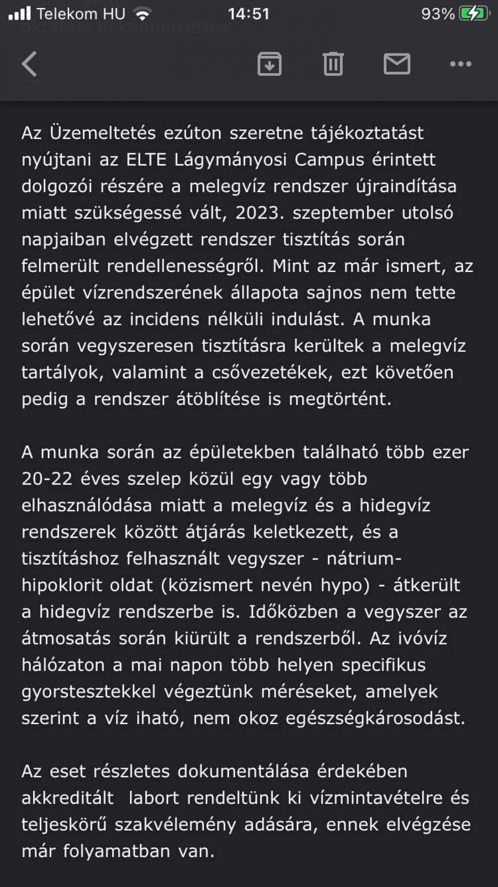

Hipó került a vízvezetékekbe az ELTE TTK lágymányosi épületében
Hipó került a vízvezetékekbe az ELTE TTK lágymányosi épületében
Kiss Dénes 2023.10.06
Több száz hal pusztulhatott el emellett rengeteg kutatás meghiúsult.
Tavaly az energiatakarékosságra hivatkozva elzáratták a melegvizet az ELTE
épületeiben így a letöbb tanszék bojlereket szerzett be. Most vasárnap azonban
újra megnyitották a központi melegvíz-csapot és mivel a csövek egy éve üresen
álltak ezért tisztítás céljából hipót öntöttek a rendszerbe. Elvileg ez egy zárt rendszer
szóval semmi probléma nem is lett volna, de mint kiderült a rendszer nem volt zárt
és a nátrium-hipoklorid tartalmú víz átszivárgott több alrendszerbe ─ tudta meg a 444.
A problémára vasárnap este lettek figyelmesek mikor az egyik laboratóriumban elkezdtek
kipusztulni a halak. Hétfőre a probléma forrása is kiderült.

Az egyetem értesítette a diákokat és a tanárokat, de elképzelhető, hogy valaki beleivott a
vegyszeres vízbe viszont sérülés nem történt.
A hibát elhárították a kárfelmérés még zajlik.